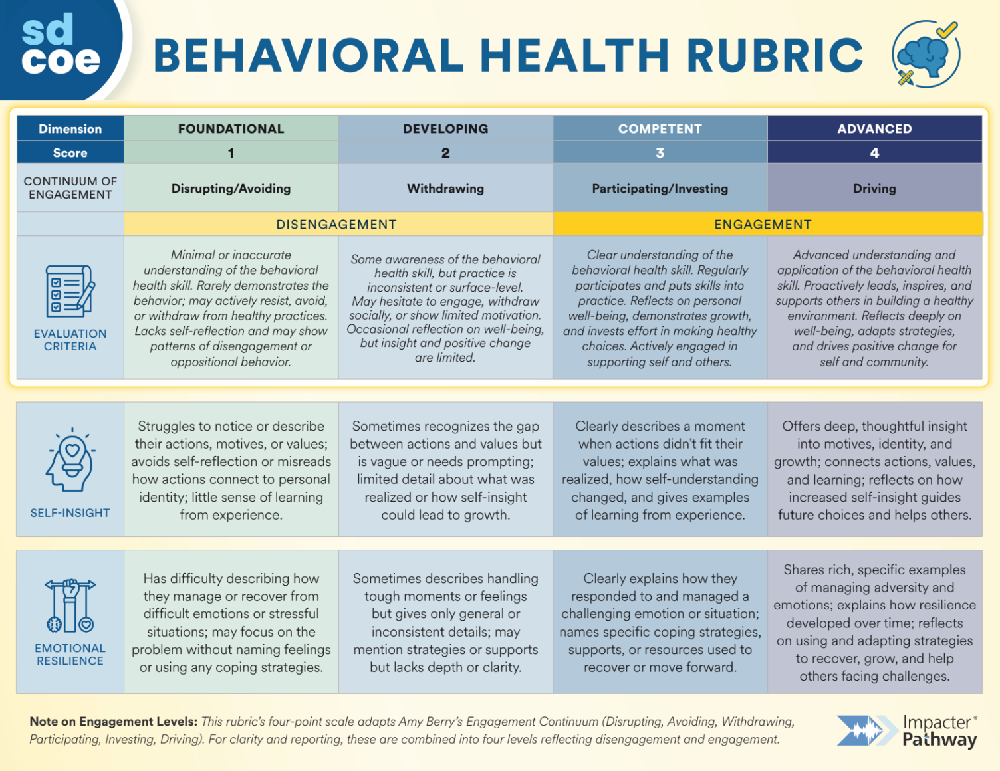

Tier Assignment
Tier assignment is automatic, not interpretive.
T1 Universal · T2 Targeted · T3 Intensive
Each student's screener score maps directly to one of three MTSS tiers using the SDCOE-validated assignment matrix. No interpretive judgment required at the screening stage — the model surfaces what needs review and routes it where it belongs.
Counselor Dashboard
Every student. Every score. Every flag.
Individual profiles · Domain signals · Direct evidence
Counselors and site admins see individual student profiles with their tier, screener score, flagged signals, and links to actual student responses — not aggregated abstractions. The student is always one click away from the score.
Validated Rubric
Every score traces back to language.
Foundational · Developing · Competent · Advanced
The four-point engagement rubric is co-developed with SDCOE and adapted from Amy Berry's published Engagement Continuum. Every model score is backed by the actual phrases that triggered it — defensible, traceable, audit-ready.
